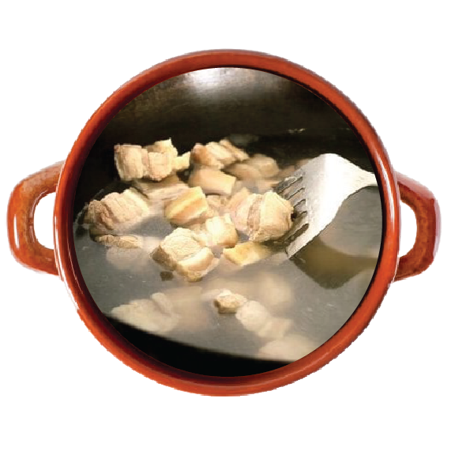

Start by cutting your pork for your Shanghai braised pork belly. Cut the pork belly into 3/4 inch thick pieces.
Then bring a pot of water to a boil. Blanch the pork for a couple minutes. This gets rid of impurities and starts the cooking process. Take the pork out of the pot and set aside.
Over low heat, add oil and sugar to your wok. Melt the sugar slightly and add the pork. Raise the heat to medium and cook until the pork is lightly browned.
Turn the heat back down to low and add Shaoxing cooking wine, regular soy sauce, dark soy sauce, and water. It's very important to the color and flavor of this dish that you have both kinds of soy sauce!